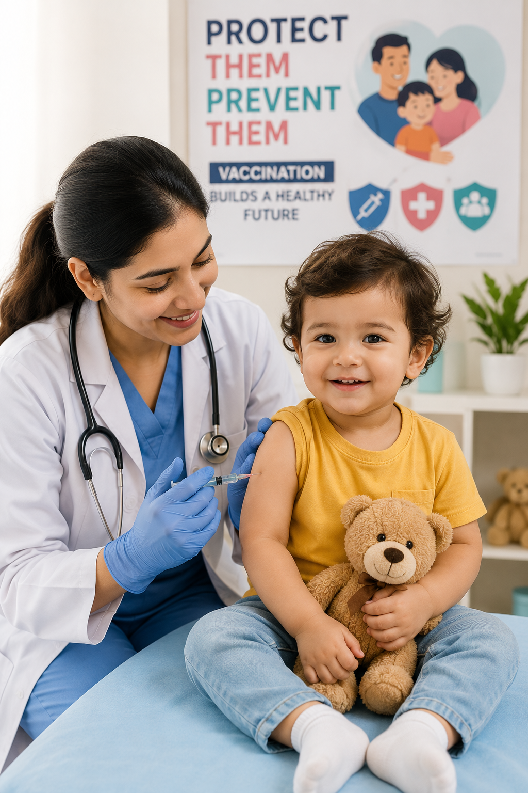

Vaccination protects children from serious and potentially life-threatening diseases. It helps strengthen the immune system and reduces the spread of infections within the community. Following the recommended vaccination schedule ensures your child stays healthy during every stage of growth.
"Vaccination is one of the safest and most effective ways to protect your child's future."
Keep your child's vaccination record updated, attend all scheduled appointments, and consult your pediatrician if you have any concerns. Mild fever or soreness after vaccination is normal and usually disappears within a day or two.
Vaccines have saved millions of lives around the world. Ensuring your child receives every recommended vaccine is one of the greatest investments you can make in their lifelong health and well-being.